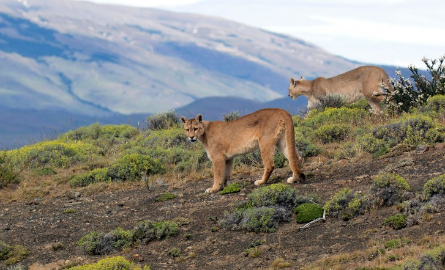
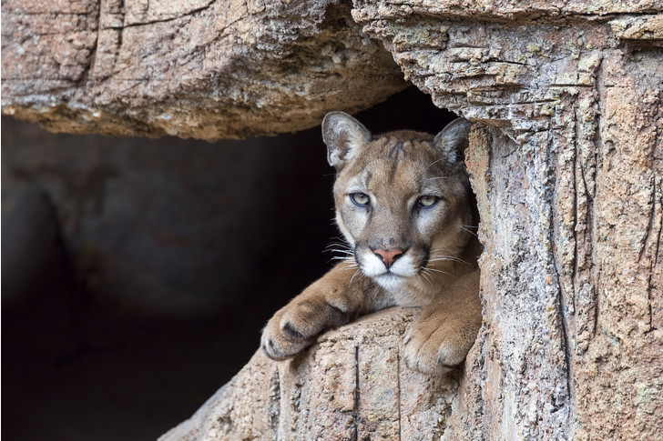
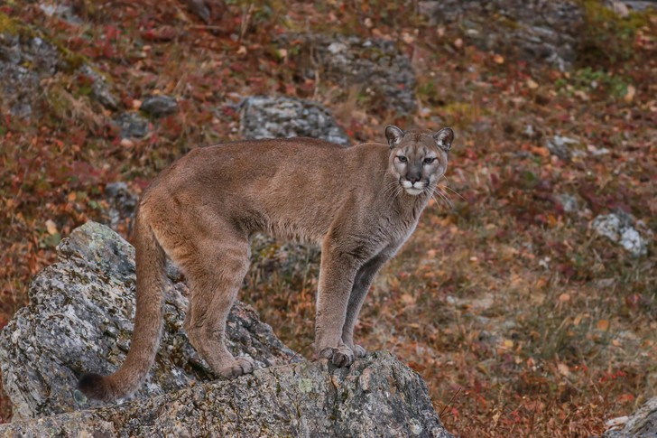
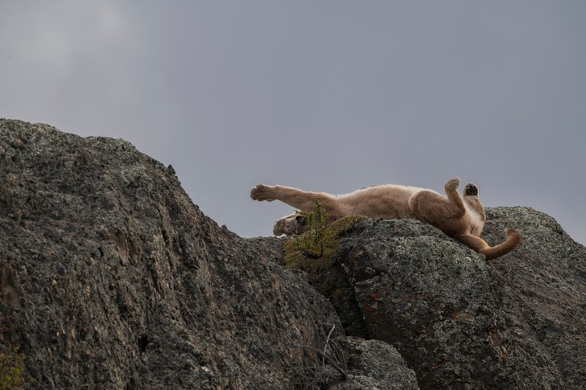

Позывные для пумы
Многие поколения охотников называли этого зверя по-своему: пумой, кугуаром, пантерой, но чаще всего горным львом
В отличие от своих сородичей — тигров и львов — пумы не могут рычать, а только мурлыкают. Иногда они издают громкий вой, отдаленно напоминающий женские рыдания, добавляя мистики в свой и без того таинственный образ. Многолетние исследования жизни пумы, проводившиеся основателем и руководителем Института природы в штате Айдахо Морисом Хорнокером, помогли приоткрыть покров тайны, долгое время окружавшей этих животных.
В глухомань, вслед за горным львом
…Чей-то долгий пристальный взгляд заставил Хорнокера остановиться. Казалось, что поблизости нет ни одной живой души: полная тишина, не слышно ни шелеста листвы, ни щебетания птиц. «И все же я был не один, кто-то явно наблюдал за мной. Наконец, примерно в тридцати метрах от себя, среди осин мне удалось разглядеть ее. Точнее, ее морду с глазами цвета янтаря и жесткой щетиной усов, блестевших в лучах заката».
Так Морис вспоминает свою встречу с «привидением Северной Америки», как иногда называют пуму. Это было почти тридцать лет назад, когда Хорнокер решил вплотную заняться изучением жизни этих опасных, но романтичных хищников.
Когда-то пумы были широко распространены по всему континенту. Но несколько веков беспощадного и бессмысленного истребления привели к тому, что их численность резко сократилась. Спасаясь от охотников, уцелевшие животные стали селиться в отдаленных и труднодоступных районах. В начале шестидесятых пума все еще была вне закона. Казалось, что фермеры и охотники просто задались целью полностью истребить этих огромных кошек, хотя на самом деле люди почти ничего не знали об их истинном нраве.
Однажды, обследуя дно небольшого оврага, он наткнулся на свежие кучки листьев, земли и веток — так самцы пум обычно помечают границу своих владений. Там и произошла описанная выше встреча с горным львом.Эксперимент с переселением
Сегодня во всех штатах, кроме Техаса, отстрел животных строго регулируется. Поэтому немудрено, что численность
пум
в последнее время выросла, и часть из них возвращается в свои прежние места обитания на западе США, повергая
местных жителей в шок.
Горные львы действительно возвращаются, но готовы ли люди принять их? Речь идет не только о том, что для этого
нужно разработать специальные программы их расселения, которых пока нет, но и о чисто психологическом факторе —
возможности мирного сосуществования людей и хищных животных.
Пума-парк: наблюдения продолжаются
Немного найдется на земле мест, где хищные животные были бы так широко представлены, как в Йеллоустонском национальном парке. В 1872 году, когда был основан заповедник, там обитали не только пумы и медведи гризли, но также волки и койоты. Уже в начале этого века пумы были практически истреблены. Вот цена, которую пришлось заплатить горным львам за политику федеральных властей, направленную на уничтожение крупных хищников, нарушавших, по мнению государственных чиновников, природный баланс в заповеднике.
Трудные соседи
В последнее время в связи с тем, что численность пум растет, возникает проблема их сосуществования с человеком. Например, в местечке Боулдер в Скалистых горах люди заняли исконную территорию пум. Местные львы не выказывают страха перед людьми, и хотя большинству жителей Боулдера, в свою очередь, льстит соседство с красивыми и загадочными хищниками, они все же опасаются за безопасность своих детей и домашних животных.
Случается, что пумы, обычно молодые и неопытные, нападают на человека. Пол Бейер, биолог из Калифорнии, исследовал статистику таких неспровоцированных нападений в США и Канаде за последние сто лет. Из 53 документально подтвержденных случаев девять закончились трагически. Для сравнения: только в США ежегодно от укусов пчел умирает 40 человек, а еще 80 гибнут от удара молнии.